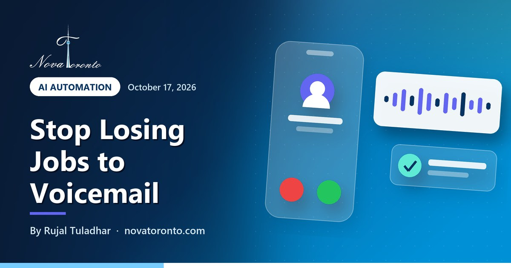

Missed calls: how a small business can stop losing jobs to voicemail
Published October 17, 2026 • By Rujal Tuladhar

You are under a sink, on a ladder or with a client, and the phone rings. You can't pick up. By the time you call back, the person has already booked someone else. For a trades business, a clinic or a salon, missed calls are often missed jobs, and voicemail rarely saves them, because a caller who wants help today can simply try the next number on the list.
The short video above, presented by Jade, an AI-generated character we made for Nova Toronto, covers the two fixes in about 30 seconds. This post goes deeper: how each fix works, what it takes to set up, and the Canadian rules on automated texts and call recording you need to respect. We checked every rule and product feature below against the official pages on October 17, 2026.
The problem
A caller who reaches voicemail can just call the next business
Fix 1: AI receptionist
Answers every call day or night, handles common questions, books jobs
Fix 2: text-back
An automatic text with your booking link when a call slips through
CASL applies to texts
Marketing texts need consent, your details and a working unsubscribe
Recording needs notice
Tell callers you record, why, and give them a choice
Missed calls: how a small business can stop losing jobs to voicemail at a glance — the short version.
Why missed calls cost more than you think
A missed call does not show up on any report. Nobody complains, nobody leaves a review. The person just goes elsewhere, and you never learn what the job was worth.
It also tends to happen at the worst times: when you are busy on another job, at lunch, after 5 p.m. and on weekends, which is often when homeowners and working parents finally get a chance to call. Hiring someone to sit by the phone all day is expensive for a small team, and a voicemail greeting asks the caller to do the work of waiting for you.
A quick way to see the size of the problem: open your phone's call log or your phone provider's dashboard and count the unanswered calls from numbers that never called back. Do it for one normal week. That number is your starting point, and it tells you whether either fix below is worth paying for.
Fix 1: an AI receptionist that answers and books, 24/7
An AI receptionist is a voice agent that picks up when you can't. It greets the caller in your business name, answers common questions from information you give it (hours, service area, prices, what to bring), takes the caller's details and, if it is connected to your calendar, books the appointment.
The building blocks are now widely available. ElevenLabs, for example, says its agents can connect to existing phone systems through a SIP trunk or a native Twilio integration, use tools to call clients and APIs to perform actions, and let you search call transcripts afterwards (ElevenLabs Agents overview). Phone providers are building it in too: Quo, formerly OpenPhone, describes its AI agent Sona as able to greet callers, answer questions and capture messages during and after business hours, using business information like pricing, hours and services (Quo missed call service).
Good fits: trades, clinics, salons, law and accounting offices, anyone whose calls are mostly the same ten questions plus a booking. Poor fits: businesses where every call is a complex, emotional conversation that only a person can handle.
Worried customers will hang up on a robot? We looked at that honestly in will customers hate an AI receptionist?, and our guide to automated phone answering for small business compares the options.
Fix 2: an automatic text-back with a booking link, plus call summaries
If you are not ready for a voice agent, or as a backup to one, set up a missed-call text-back. When a call goes unanswered, the caller gets a short text right away, for example: "Sorry we missed you, this is Maple Plumbing. Book a time here or reply with what you need." The caller has something to do immediately instead of dialling your competitor.
Many business phone apps include this. Quo's page says you can respond to texts, missed calls or voicemails with a pre-defined message and set automatic replies based on different triggers, and it lists call summaries among features that need a paid subscription (Quo). The booking link can come from a tool you may already have: Google Calendar lets you create an appointment schedule with a booking page, though Google notes some features need an eligible Google Workspace or Google One subscription and that you must set it up on a computer, not the phone app (Google Calendar Help).
The second half is call summaries: a short note on your phone after each call saying who called, what they wanted and what was promised. That way you can call back the urgent ones first, between jobs, without listening to a pile of voicemails.
The Canadian rules: CASL for texts, consent for recordings
Automating your phone does not exempt you from Canadian law. Two sets of rules matter. This is general information, not legal advice.
Automated texts and CASL. Canada's Anti-Spam Legislation focuses on commercial electronic messages, which the government describes as messages that encourage participation in a commercial activity, and it notes spam can include unsolicited text messages (ISED: Canada's anti-spam legislation). Innovation, Science and Economic Development Canada's consent guide says consent applies to messages such as emails or texts; that implied consent is time-limited, valid for up to 2 years or just 6 months in the case of inquiries or applications; and that every unsubscribe request must be actioned within 10 business days or less, at no cost to the recipient (ISED: Getting consent to send email). The same guide lists what each message must include: your business name, a current mailing address, accurate contact information and an unsubscribe mechanism.
In practice: a factual reply to someone who just called you about a job is a different thing from marketing. Adding that number to a promotions list and texting deals every month is marketing, and it needs valid consent and a record of it. Keep the text-back factual and put your business name in it.
Call recording. Many AI receptionists record and transcribe calls. The Office of the Privacy Commissioner of Canada says an organization must inform the customer that it is recording a call, should state the purpose as clearly and narrowly as possible, and must give customers a choice about whether their voice is recorded; where recording is not essential, it lists alternatives such as continuing without recording, email or completing the transaction online (OPC: Recording of customer telephone calls). Consent is implied when the caller continues knowing the call is recorded and why.
Setup checklist
Most of this can be done in a week. Work through the list in order:
- Measure: count one week of missed calls that never called back.
- Write your answers: hours, service area, prices or price ranges, the ten questions callers ask most, and what counts as an emergency.
- Create a booking link: a calendar booking page with the job types and time slots you actually want.
- Turn on the text-back: short, with your business name, the booking link and a way to reply. No promotions.
- Add the AI receptionist if missed calls are frequent: connect it to your number, your calendar and the answers from step 2.
- Add the recording notice: one sentence at the start of the call that says the call is recorded, why, and how to reach a person instead.
- Set an escalation rule: urgent calls get forwarded or flagged to your phone right away.
- Test it yourself: call after hours, ask an awkward question, and read the summary you get.
- Review after 30 days: compare missed calls and bookings with your starting week.
New to AI tools generally? Our free beginner AI course explains the basics in plain language.
The bottom line
Missed calls are a quiet leak, and voicemail does not plug it. An automatic text-back with a booking link is the quickest fix; an AI receptionist that answers and books around the clock catches the rest. Follow CASL for anything promotional and tell callers when you record. If you want it set up for you, our AI receptionist service builds and tests the whole thing for GTA businesses.
Common questions
What is the fastest way to stop losing customers to missed calls?
Turn on an automatic missed-call text-back that sends your business name and a booking link as soon as a call goes unanswered. Many business phone apps include it. If you still miss many calls, add an AI receptionist that answers and books appointments 24/7.
Do Canadian anti-spam rules apply to automatic texts?
CASL covers commercial electronic messages, including texts. If a message promotes your business, you need consent, your business name and contact details in the message, and an unsubscribe that is honoured within 10 business days. Keep missed-call replies factual and check the government's CASL guidance. This is general information, not legal advice.
Do I have to tell callers that an AI receptionist records the call?
Yes, if the call is recorded. The Office of the Privacy Commissioner of Canada says organizations must tell customers a call is being recorded, explain the purpose, and give them a choice, such as another way to reach you.
Will an AI receptionist replace my staff?
It works best covering the calls nobody can take: during jobs, lunch, evenings and weekends. Complex or sensitive calls should still go to a person, so set a rule that forwards urgent calls straight to you.
Want this working in your business?
Book a free 15-minute call and we'll map out which of these would actually save you time and win you customers.
Book a Free ConsultationNew to AI? Take our free 7-lesson AI course for beginners.
Sources: Innovation, Science and Economic Development Canada: Getting consent to send email • Innovation, Science and Economic Development Canada: Canada's anti-spam legislation • Office of the Privacy Commissioner of Canada: Recording of customer telephone calls • ElevenLabs: ElevenAgents overview • Quo (formerly OpenPhone): Missed call service • Google Calendar Help: Create an appointment schedule